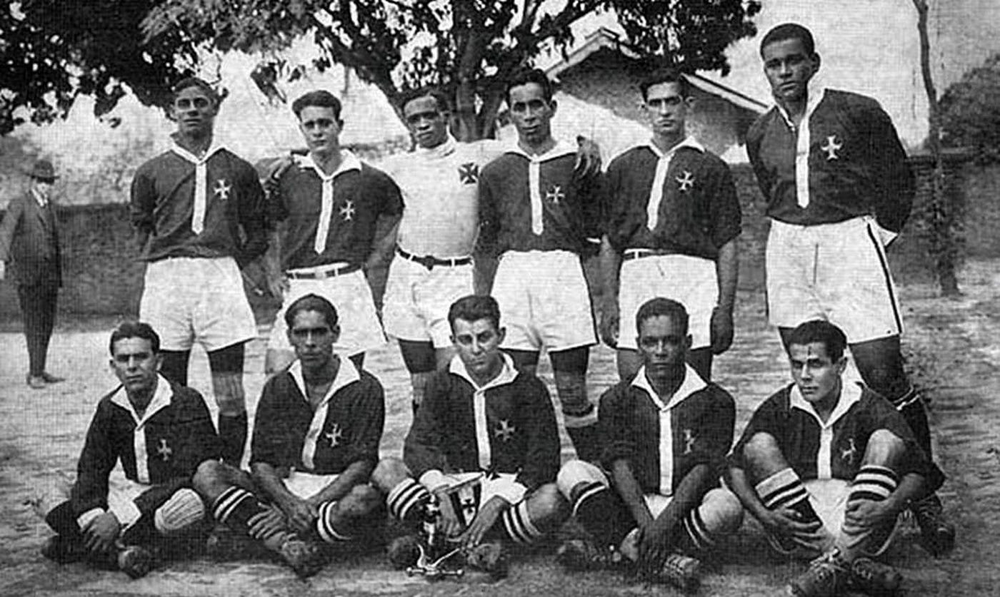
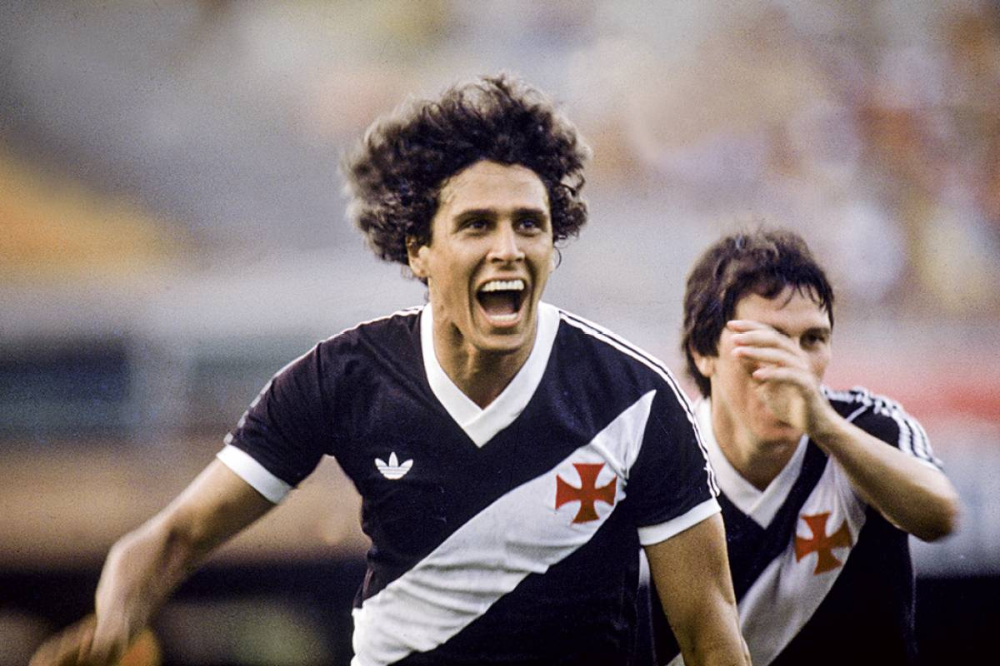
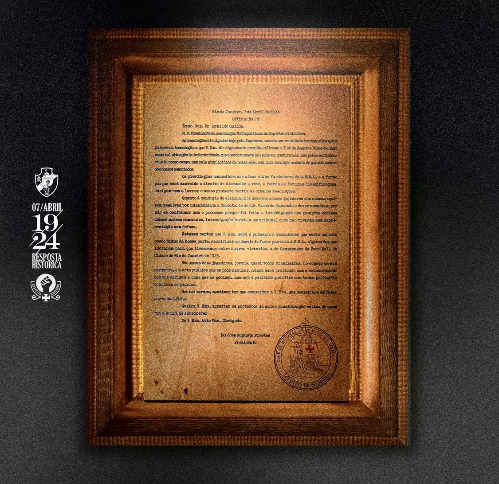
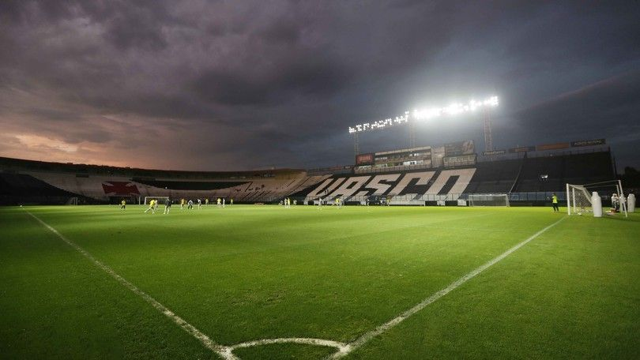

Nossa História
Fundado em 1898 a partir da inciativa de portugueses residentes no Brasil, o Club de Regatas Vasco da Gama é instituição poliesportiva tradicional, marcada pela luta pelos direitos da população, sempre opondo-se a quaisquer tipos de preconceito e discriminação.
Como forma de contar nossa histótia de forma mais visual, apresentaremos algumas imagens que sintetizam o que é ser Vasco!



